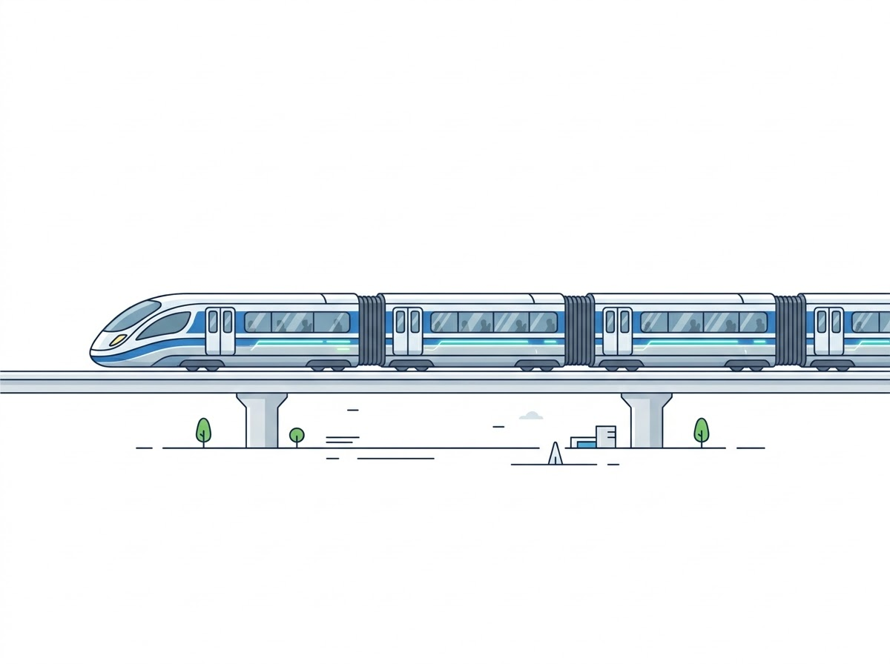
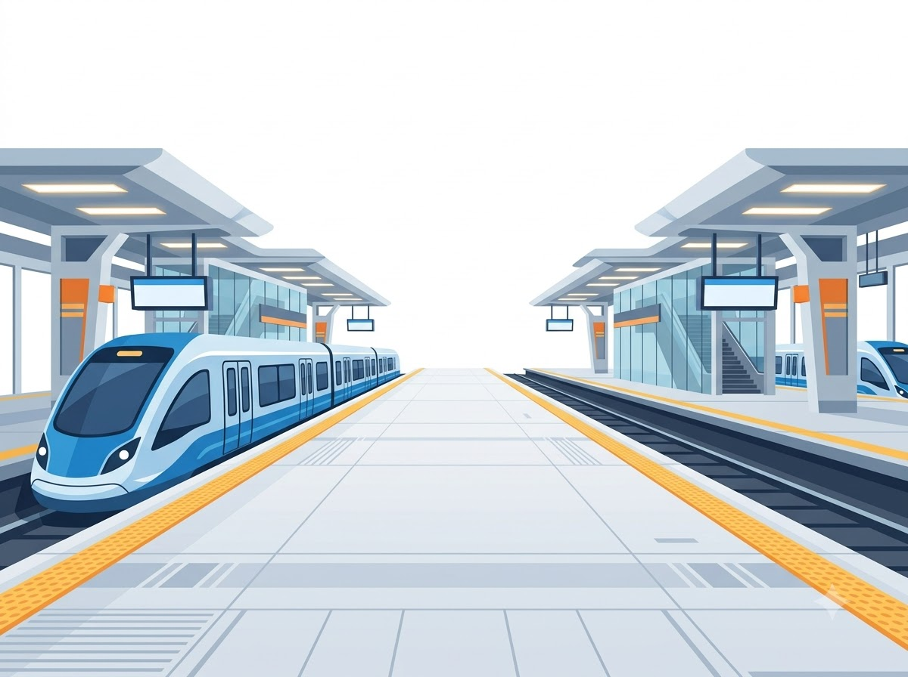

두 사건이 동시에 일어났다는 말은 모든 관찰자에게 같을까?
A와 B의 빛은 어느 순서로 도착할까요? 먼저 예측을 고르고, 장면과 표에서 빛이 도착한 때와 사건이 일어난 때를 비교해 보세요. 고등학교 물리·수학 활동 · 약 30분


- 1 사건 설정
- 2 예측 저장
- 3 장면 관찰
- 4 기준계 비교
- 5 기록 저장
사건 설정
플랫폼에 서서 잰 값을 S계, 움직이는 열차에서 잰 값을 S′계라고 해요. 거리는 광초(빛이 1초 동안 가는 거리), 시간은 초로 적어요.
장면 — 열차·플랫폼·빛 신호 (도식)
3D 장면이 아니라 도식적 배치입니다. 물체의 시각적 길이를 시간 지연의 근거로 쓰지 마세요. 현재 시간 커서는 S계 시각입니다.
탭을 숨기면 재생이 멈추고, 돌아오면 멈춘 자리에서 직접 다시 시작한다.
좌표 — S와 S′의 사건 표
같은 사건을 두 기준계 좌표로 표현합니다. 음의 t′는 기준 원점 이전 사건이며 오류가 아닙니다.
| 사건 | t (초, S) | x (광초, S) | t′ (초, S′) | x′ (광초, S′) |
|---|
표를 옆으로 밀거나 좌우 화살표 키를 눌러 오른쪽 열도 볼 수 있어요.
빛 도착 시간과 사건 시간은 다른 표에 둡니다
| 수신자 |
|---|
표를 옆으로 밀거나 좌우 화살표 키를 눌러 오른쪽 열도 볼 수 있어요.
간격 분류
기준 쌍 A–B의 간격: 공간꼴
| 쌍 | Δt (초) | Δx (광초) | Δs² | 분류 |
|---|
표를 옆으로 밀거나 좌우 화살표 키를 눌러 오른쪽 열도 볼 수 있어요.
공간꼴인 두 사건은 서로 원인과 결과로 이어지지 않아요. 그래서 움직이는 기준계에서는 두 사건의 순서가 달라질 수 있어요.
고등학교 심화: 시간 지연 공식의 조건
빛의 속도를 c=1로 두어 거리 단위를 광초로 표현해요. 시간 지연 Δt=γΔτ는 같은 시계로 잰 두 사건에만 써요. 서로 다른 장소의 임의 사건에 바로 적용하지 않습니다. 예를 들어 β=0.6에서 이동 시계 1초는 S에서 1.25초로 잽니다.
도표 — ct–x 시공간 도표
빛 세계선 기울기 ±1이 보존되는지 확인하세요. 서로 다른 동시성 절단면을 한 프레임에 혼합하지 않습니다.
비교
예측을 저장하고 장면을 관찰한 뒤 기준계를 비교해 보세요. 일반상대론·가속 관찰자는 이 활동에서 다루지 않습니다.
결과:
예측을 저장한 뒤 장면을 관찰하면 비교할 수 있어요.
전이 과제
비교를 마친 뒤, 빛으로 연결된 두 사건(빛꼴)의 순서가 기준계를 바꿔도 유지되는지 살펴보세요.
고등학교 심화: 길이·고유시간·여정
위에서 정한 β 값을 함께 쓴다. 막대는 S′에 정지, 길이는 S에서 같은 시각에 잰 두 끝으로만 잰다.
결과:
고유시간
결과:
왕복 여정 (2구간, 순간 전환 이상화)
결과:
누가 젊어지는가의 해석은 별도 설계 전까지 다루지 않는다.
기록
저장된 기록 없음 (이 브라우저에만 저장, 개인 식별 정보 없음)
기억할 점: 빛이 도착한 순서와 각 기준계에서 잰 사건 시간은 서로 다른 값이에요.